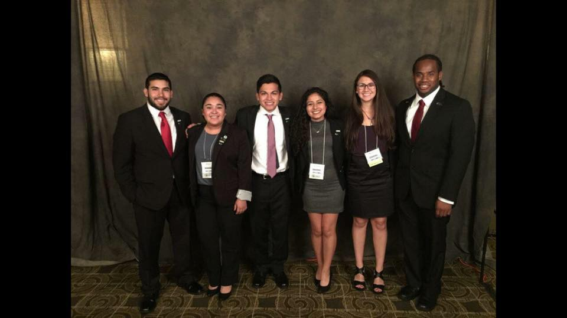

Our Chapter
The University of Texas at Austin chapter of Latinos in Engineering and Sciences, or Texas MAES, was established in 2015 by a group of enthusiastic and driven Latino students that wanted an organization to promote success and grant opportunities to other Latino students in their community.
